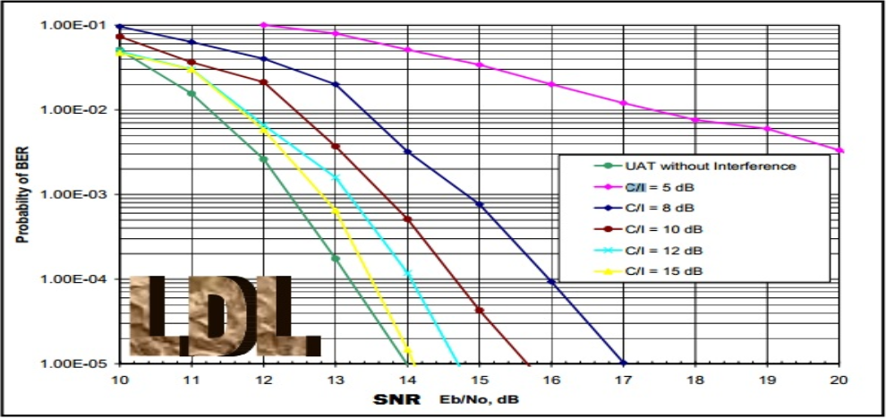
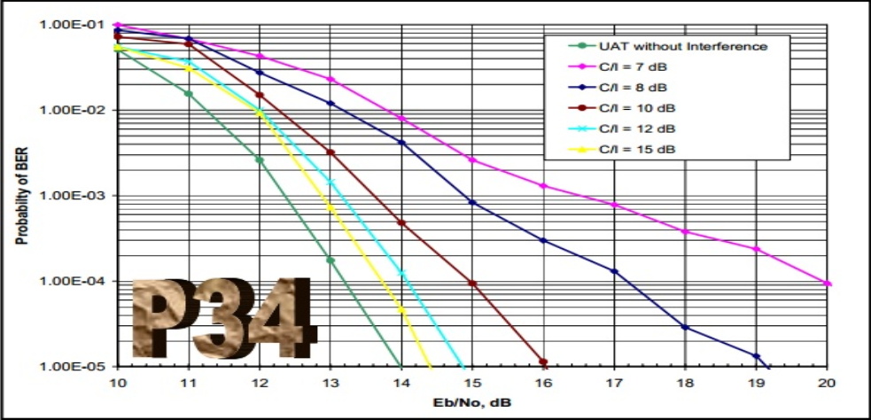

Criado por
Psycho Mantys / @psycho_mantys

C/I = potencia do canal em relação a interferência
Eb/No = Eb: Energia de Bit/No: Densidade de Ruído Espectral

C/I = potencia do canal em relação a interferência
Eb/No = Eb: Energia de Bit/No: Densidade de Ruído Espectral